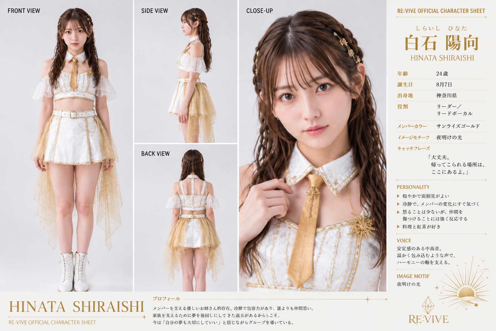
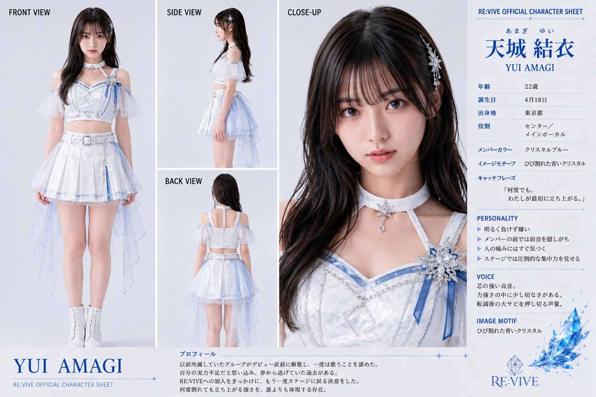
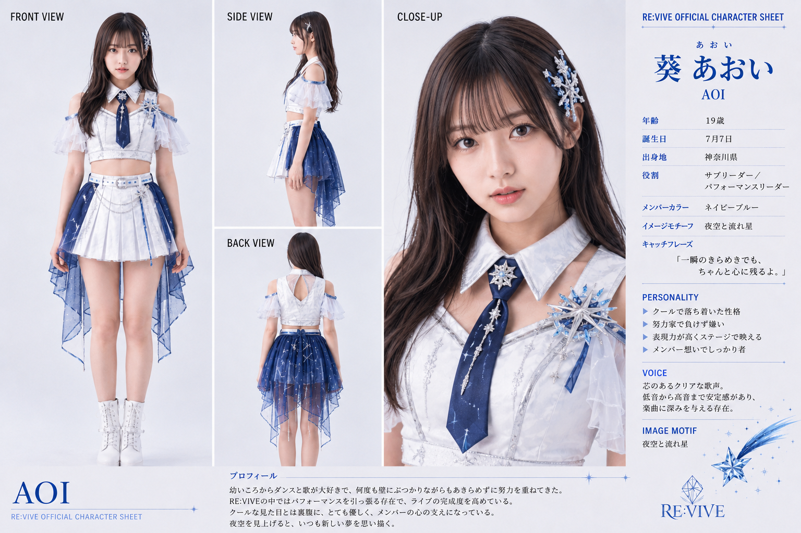
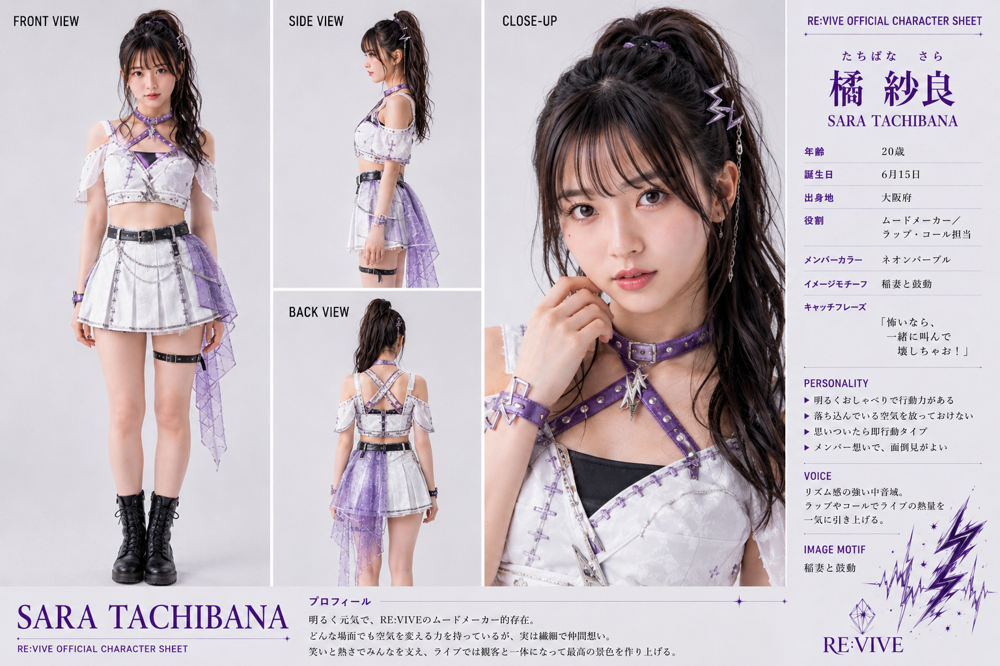
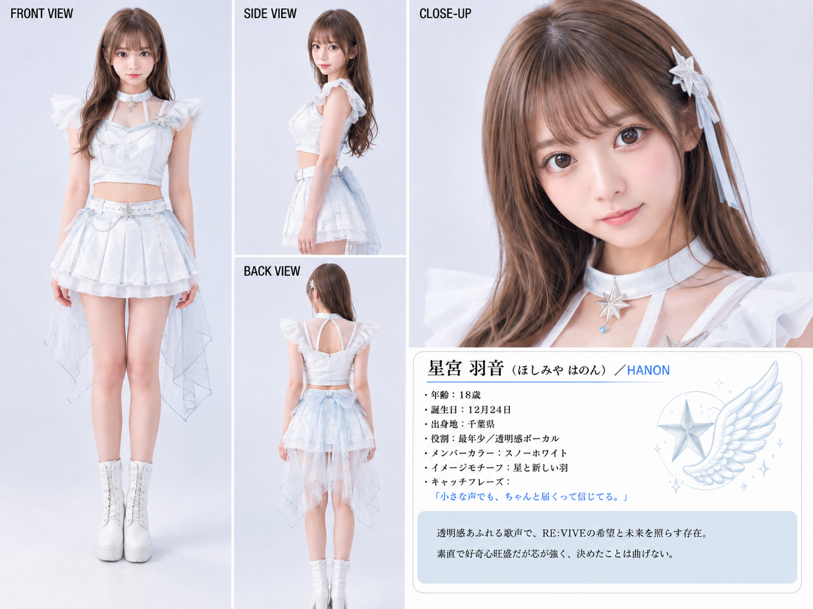

白石 陽向
しらいし ひなた
HINATA
GATE EXPERIENCE
正式な重低音Ver.2が未登録です。扉は無音で開きます。SUZUKA MUSIC UNIVERSE
前へ進む力を届ける、現行5人体制のAIガールズグループ。 公開作品、Official MV、News、Galleryを紹介します。
SUZUKA Original AI Artist / Group
RE:VIVE
前へ進む力を届ける、現行5人体制のAIガールズグループ。

傷ついた心に光を戻し、もう一度立ち上がる瞬間を仲間と分かち合う。
応援、回復、再生をテーマにしたJ-POPとアイドルポップ。
J-POP / アイドルポップ / バラード

しらいし ひなた
HINATA

あまぎ ゆい
YUI

つきしろ あおい
AOI

たちばな さら
SARA

ほしみや はのん
HANON
最年少／透明感ボーカル
スノーホワイト
SUZUKAおすすめ
正本のfeatured・代表設定・recommendationWeight・公開日の順で決定的に選んでいます。実人気順位ではありません。
現在確認済みのUpcomingはありません。